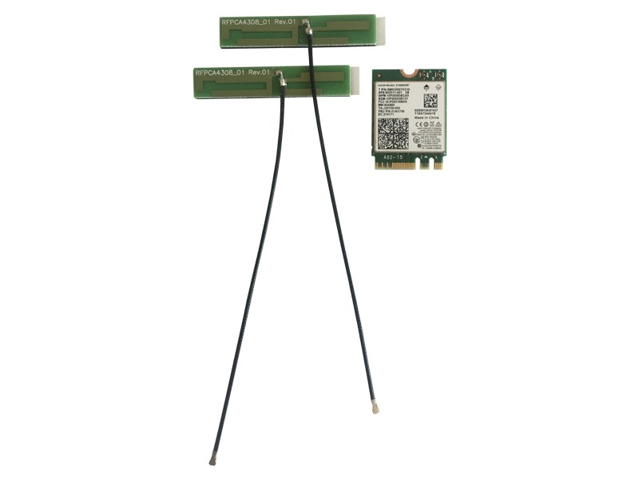
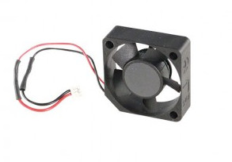

Official Accessories
In the UDOO Shop you can also find some accessories for the UDOO X86.
M.2 Modules
M.2 SSD Transcend MTS600

- Capacity: 128GB/256GB/512GB
- Dimensions: 60.0mm × 22.0mm × 3.58mm (2.36" x 0.87" x 0.14")
- Weight: 6g (0.21 oz)
- Storage Media: MLC NAND Flash memory
- Operating Voltage: DC 3.3V±5%
- Operating Temperature: 0°C (32°F) to 70°C (158°F)
For more info about this SSD module you can check the official Transcend page
To mount the SSD is necessary the following fixtures (not included with the item):
- 1x M3x12mm Flat Head Screw
- 1x 6mm Round Spacer
- 1x 0.5mm Washer
- 1x M3 Hex Bolt
See the image below for mounting instructions.
M.2 Wi-Fi Intel dual band ac Wi-Fi + BT 4.2 5GHz + adhesive antenna
The package includes:
- Wi-Fi AC and Bluetooth 4.2 module
- Intel® Dual Band Wireless Wi-Fi AC and Bluetooth 4.2 module (AC3168)
- Dimensions: 4.9 x 3.5 x 0.4 inches
- Weight: 8.5g (0.3 oz)
- M.2 compatible RF micro coax type connector
- 2x Antennas
- IPEX MFH-4 connector
- 10cm IPEX cable
- Adhesive backing on aerial plates
For more info about this WiFi/BT module you can check the datasheet from the Intel website
Heads up! Intel® Dual Band Wireless Wi-Fi AC and Bluetooth 4.2 module (Intel® AC3168) was released in 2016 so we suggest to use a recent distribution to find the latest drivers already installed. If you are using a Linux distribution you need at least the v4.6 of the Linux Kernel to make this module work properly.
Heads up! You need both the antennas to make the module works properly. Connect an antenna to the Main A connector to enhance Wi-Fi signal. Connect an antenna to the Aux B connector to enhance Bluetooth and BluetoothLE signal.
To mount the WiFi/BT Kit is necessary the following fixtures (not included with the item):
- 1x M3x8mm Flat Head Screw
- 1x 2mm Round Spacer
- 1x 0.5mm Washer
- 1x M3 Hex Bolt
See the image below for mounting instructions.
M.2 dual Ethernet Module Kit
This module is based on 2x Realtek 8111GS Ethernet controllers (fully compliant with IEEE 802.3, IEEE 802.3u, IEEE 802.3ab).
When the M.2 dual Ethernet Module Kit accessory is plugged into M.2 Key B slot, the UDOO X86 board will offer three different Gigabit Ethernet ports.
To mount the M.2 dual Ethernet Module Kit is necessary the following fixtures (not included with the item):
- 1x M3x12mm Flat Head Screw
- 1x 6mm Round Spacer
- 1x 0.5mm Washer
- 1x M3 Hex Bolt
See the image below for mounting instructions.
Mounting a M.2 accessory
Check this images to know how to correctly mount M.2 accessories.
Heads up! Screws, spacers and all other fixtures to mount the M.2 accessories are not included with the accessories items, but they are included when you buy any model of the UDOO X86 board.
If you haven't the M.2 mounting kit arrived with the board you can buy it in the UDOO Shop: Screws and spacers kit for M.2 accessories mounting.
Displays
7inch HDMI/USB Display/Touch
The 7inch HDMI/USB Display/Touch has a 1024×600 pixel resolution and is supported by Windows 10/8.1/8/7, Linux, and Android Operating System
Display Features:
- 1024×600 high resolution;
- Resistive touch control;
- Compatible and Direct-connect with UDOO X86 with Windows 10/8.1/8/7, Linux and Android operating system;
- Also works as a computer monitor, in this case, touch panel is unavailable and HDMI cable is required;
- HDMI interface for displaying, no I/Os required (however, the touch panel still needs I/Os);
- Multi-languages OSD menu, for power management, brightness adjustment, contrast adjustment, etc;
- Supports 100-level backlight adjustment.
To use it just:
1- Turn On the “backlight” switch on the back of the LCD;
2- Connect the Touch ports on your UDOO. The device will be recognized automatically;
3- Connect the HDMI port of the LCD to the HDMI port on your UDOO with an HDMI cable.
Heads up! When multiple displays are detected by your UDOO, the LCD can only be used to control the cursor on main displays. So it is proposed to set the LCD as the main display.
If you're looking for more info about this screen you can check the wiki page of the manufacturer: 7inch_HDMI_LCD_(C)
Cases
Metal Case
A beautiful metal case for your UDOO X86 Board.
Heads up! Please notice that the case does not dissipate heat, so you’ll need the Fan Accessory if the temperature of the processor seems too high for the use you are doing of the board.
Check here the mechanical drawing to see the dimensions of the case.
UDOO X86 METAL CASE includes:
- 1x Metal Top Part;
- 1x Metal Bottom Part;
- 8x Pinout Header Extender;
The case features also two holes, in the two sides, for connecting externally the WiFi and BT antennas of the M.2 module through a RP-SMA connector.
For example you can use 2x IPEX MFH-4(W.FL) to RP-SMA cables and 2x RP-SMA antennas like in the following image.
Heads up! These items are not included.
Acrylic Case
Top and Bottom plexiglass acrylic case for UDOO X86
Here you can download the cutting file of the acrylic enclosure.

Cables and Others
CPU fan for UDOO X86 heatsink
You don’t need a CPU fan for your ordinary activities, but the fan will help you out with complex projects that require a lot of power. The CPU fan is applied on the heatsink. It has 3 pins and you can set up thresholds inside the BIOS to automate it. It’s pretty much plug-and-play.
Dimensions: 2.9 cm height, 2.9 cm width, 1cm depth
To mount the CPU fan is necessary the following fixtures (included with the shop item):
- 2x M3 self-tapping L16mm tip
Cables and Power Supply
- HDMI to HDMI - HDMI A Male to A Male Cable 2MT: Supports Ethernet, 3D, 4K video and Audio Return Channel (ARC)
- MiniDP++ to HDMI - The miniDP++ to HDMI Passive Adapter lets you connect the UDOO X86 to a high definition (up to 1080p) monitors and projectors
- MiniDP++ to DP - The 2MT miniDP++ to DP Adapter lets you connect the UDOO X86 to a high definition (up to 4k) monitors and projectors
- SATA data and power cables for UDOO X86 - SATA data and power cables for UDOO X86 (CN18 and CN30 connectors)
-
Power Supply EU 12V 3A for UDOO X86 -
- OUTPUT: 12V, 3A
- Jack Dimensions: (Inner diameter) 2.1mm - (Outer diameter) 5.5mm.